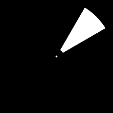
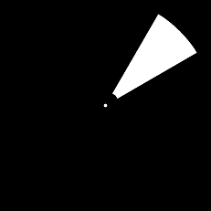

Retinotopic Mapping output files Tutorial
Document version: 1.0
Author(s): Sven Gijsen
Date: July 2015
Introduction
This tutorial (installed in the directory BrainStim\examples\Tutorials\6_RetinoTopicMappingOutput) shows an example of how you can configure an object, derived from the RetinotopyMapper script class, to automatically generate output (mask) file(s) for you.
After running an Retinotopic mapping experiment the researchers might need to know exactly what the visual stimuli presented to the subjects screen (while running the experiment) contained because this information is needed for further (post) processing/analysing the experiment data. A case scenario where this output data is needed for could be the Population Receptive Field Estimation technique implemented in the BrainVoyager software as described in the Generating Binary Stimulus Frames document.
Important! This tutorial further describes a way of generating output files that is in line with the guidance of the online BrainVoyager Generating Binary Stimulus Frames document.
The generated output file(s) contain the pixel-level representation of the visual retinotopic stimuli in a binary form at each moment the object derived from the RetinotopyMapper script class its (parent class) incrementExternalTrigger() slot gets triggered. The generated output file(s) contain data of the requested information type (Mask or Frame) and are stored in one or more file(s) from a particular requested file type (PNG, DAT or CDAT) depending on the researchers request.
To generate this output we simply need to set the OutputTriggerFrame parameter (in the experiment file (*.exml) from the object derived from the RetinotopyMapper script class) to ‘true’ for the Block Trials for which we want to automatically generate the output and fully run the experiment once.
Important! Because generating output files can cause the experiment to slow down you should not enable this while running the experiment with a real subject. Therefore it’s advised to enable this once before or after the experiment with the same configuration set, save the data and disable this feature again.
As explained above there are two types of information we can generate (Mask or Frame). These can also be set in the experiment file (*.exml) setting the OutputFrameType parameter (from the object derived from the RetinotopyMapper script class). The “Frame” setting contains the full color visual stimuli pixel presentation, The “Mask” setting only contains the visual stimuli mask of the activated visual area in white and the remaining information in black.
 

OutputFrameType = “Frame” and OutputFrameType = “Mask”
Above you can see an example of the different types of generated visual information. The above two images are resized, the actual output file(s) contain the full pixel information resolution as configured in the experiment file (*.exml) (using the StimulusWidthSpan and the StimulusHeightSpan parameter).
The requested generated visual information is then stored in one or more file(s). In what kind of file(s) this is stored can be set using the OutputFrameFormat parameter. This parameter can be:
-
“PNG”, the requested visual stimuli information is stored in one or more (*.png) file(s) for each generated visual output. The PNG (*.png) format is a widespread used image format that stores the data compressed (but without loosing information!) and can be opened(viewed) with almost all image viewers.
-
“DAT”, the requested visual stimuli information is stored in one or more (*.dat) file(s) for each generated visual output. The DAT (*.dat) format is a BrainStim format that stores the data uncompressed (raw) in a way that it can be processed very quickly in memory by BrainStim (or any other third party software tool) because the underlying pixel information can be accessed more directly. Unfortunately this type of storage takes much more disk space and can not be opened(viewed) with most image viewers.
-
“CDAT”, this is the same as the above “DAT” storage type but now all the generated visual output is saved in one single CDAT (*.cdat) (Concatenated DAT) file. This file has the same properties as the DAT storage type, but can be even quicker processed by BrainStim or an other third party software tool) because it now only needs to open and load one single file to memory for further processing. This file of course takes more space that a single DAT file because it stored all the generated visual output in one single file.
The generated data automatically saved in the BrainStim outputs folder (in BrainStim\outputs\). For each time an experiment is run while this output data generation feature is enabled a sub-folder with a unique name is automatically created in the output folder and the requested data is saved there. The name of the sub-folder is combined from the following:
<Year><Month><Day><Hour><Minute><Second><millisecond>_<Experiment Name (set in the Experiment File)>
like: 20131018152750116_Retinotopic_Mapping_Output
means: recorded on the 18th of October 2013, 15:27:50 and 116 milliseconds with the experiment name “Retinotopic_Mapping_Output”.
making sure that each time you run an experiment, which is generating the above output, a new unique name (containing some useful information) for the sub-folder is automatically created for you.
Each file in the folder is then for the case of DAT or PNG files named like:
<Block>_<Trial>_<InternalTrigger>_<ExternalTrigger>.<dat or png>
and for the case of a single CDAT file like:
<ObjectID>_<OutputFrameType>.cdat
the above ObjectID is the ID of the object (derived from the RetinotopyMapper script class) as defined in the experiment file (*.exml) in the <declarations> section. The OutputFrameType is value of the earlier mentioned configured OutputFrameType parameter value.
Hands On
The experiment file
Let’s take the above theory to practice?
-
Start BrainStim
-
Open the file PolarAngle.exml from the directory BrainStim\examples\Tutorials\6_RetinoTopicMappingOutput
-
Execute this experiment file directly from within BrainStim by pressing the ‘F5’ shortcut key (Execute)
-
Press the ‘Alt’ key to start the experiment and observe the visual stimuli steps (wait until it finishes, about 14 seconds, or abort using the CTRL+’a’ (abort) key-combination.
We just executed an Retinotopic Polar Angle experiment containing 3 Blocks (Fixation ? PolarAngle ? Fixation) as defined in the experiment file. The experiment is automatically externally triggered by the declared (line 18) TriggerTimer object that is connected (line 36) to the incrementExternalTrigger() slot of the declared (line 26) RetinotopyMapper object.
This TriggerTimer object emits a timeout() signal (line 38) each 500 milliseconds (line 53). The visual PolarAngle stimuli moves in discrete steps (see parameter DiscreteTriggerSteps, line 174) and completes one cycle (full rotation) in 12 internal trigger steps (see parameter CycleTriggerAmount, line 143). The 2 fixation blocks in the begin and end of the experiment take each 2 internal triggers. This leads to the following:
- Block (number 0), Fixation_Block_Begin: (2 Int. Trigg * 1 Trial * 500mSecs) = 1 second.
- Block (number 1), PolarAngle_Block: (12 Int. Trigg * 2 Trials * 500mSecs) = 12 seconds.
- Block (number 2), Fixation_Block_End: (2 Int. Trigg * 1 Trial * 500mSecs) = 1 second.
The total experiment lasts for 14 seconds and we should see two full PolarAngle cycles (rotations) in 12 discrete steps.
-
Enable the visual stimuli output generation by setting the OutputTriggerFrame parameter (line 119) to “true”. Make sure that the OutputFrameType parameter is set to “Frame” and the OutputFrameFormat parameter is set to “PNG”. Execute the experiment again, but now wait until it completes.
-
Open the newly created sub directory from the BrainStim\outputs\ directory and view the files. Notice that there are 28 (*.png) files created (for each internal trigger) that contain the full color (Frame) pixel information of the moment the visual stimuli data was created.
-
Now make sure to change the OutputFrameType parameter to “Mask” and run the experiment again completely until it finishes.
-
Examine again the generated output files and notice that these images only contain a activation mask of the visual stimuli, the area’s where the visual stimuli was active has a white color and the inactive area region is black in the generated file.
-
Change the OutputFrameFormat parameter to “Dat” and run the experiment again, wait until it finished.
-
Open the newly created sub directory and notice that there are now again 28 files generated but with a different file extension (*.dat), which we can’t open directly in a image viewer. The size of a single (*.dat) file (2305 KB) is also quite bigger than the size of a previously created (*.png) file (2 KB)!
Important! Because the Dat (*.dat) format takes a lot of disk space it’s advised to use a program like Winzip for compression if you need this to send the data by e-mail for example, this can be very efficient (>90%) because there’s a lot of redundancy in this custom DAT file format.
-
Now we change the OutputFrameFormat parameter to “CDAT” and run the experiment again, wait until it finished.
-
Open the newly created sub directory and notice that there’s now only one file (64513 KB) file created by the export feature with the CDAT ( *.cdat) file extension.
Managing (C)DAT files
The custom (C)DAT format (*cdat and *.dat files) file protocol is well documented in the Experiment Manager Plug-in Documentation. A third party can use this information to implement code to be able to directly handle these type of file(s) by writing their own custom file handling routines as documented. The ExperimentManager Plug-in script class collection contains a script class (the ImageProcessor class) that makes it possible from within the BrainStim internal script environment to directly handle these file types. This script class contains several routines to handle the DAT and CDAT format. Now we’ll take a look at two prepared scripts that use some of these routines. The first script creates a dialog where we can select a CDAT file (*.cdat) and view it using some controls, let’s try this:
-
Open the file CDatFileViewer.qs from the directory BrainStim\examples\Tutorials\6_RetinoTopicMappingOutput
-
Examine the script
-
Notice that an object gets constructed from the ImageProcessor script class which is used for CDAT file handling
-
There’s a custom Dialog script object created which is used for the dialog and controls to load and view a CDAT file
-
Run the script by pressing the ‘F5’ shortcut key (Execute)
-
A Dialog is shown where we can select an input CDAT file, click the Select *.(C)DAT File and browse to the CDAT (*.cdat) file created in one of the above steps.
-
Step through the internal stored activity masks by pressing the >>Next and the Previous<< buttons
-
Close the dialog
-
Run the script again and for now browse and open a DAT (*.dat) file from within the dialog created by the script
-
Close the dialog
-
Examine the script code and try to figure out how the script does its job
Sometimes we want to convert one of the available file formats to another format. The ImageProcessor script class also implement some routines for doing this in the BrainStim internal script environment, this, let’s take a look of an example script:
-
Open the file DatFileConcatination.qs from the directory BrainStim\examples\Tutorials\6_RetinoTopicMappingOutput
-
Run the script by pressing the ‘F5’ shortcut key (Execute)
-
A file browser dialog is shown where we can select a directory that contains DAT (*.dat) files, browse and select the directory that contains the DAT files from one of the above examples.
The script concatenates all the DAT files together into a new CDAT (*.cdat) file and saves this file to a subdirectory inside the selected DAT file directory called “processed”. Hereafter the script again extracts/splits the created CDAT file to separate DAT files and saves them to the same created subdirectory. Finally these extracted files are again converted from the DAT (*.dat) format to the PNG (*.png) format.